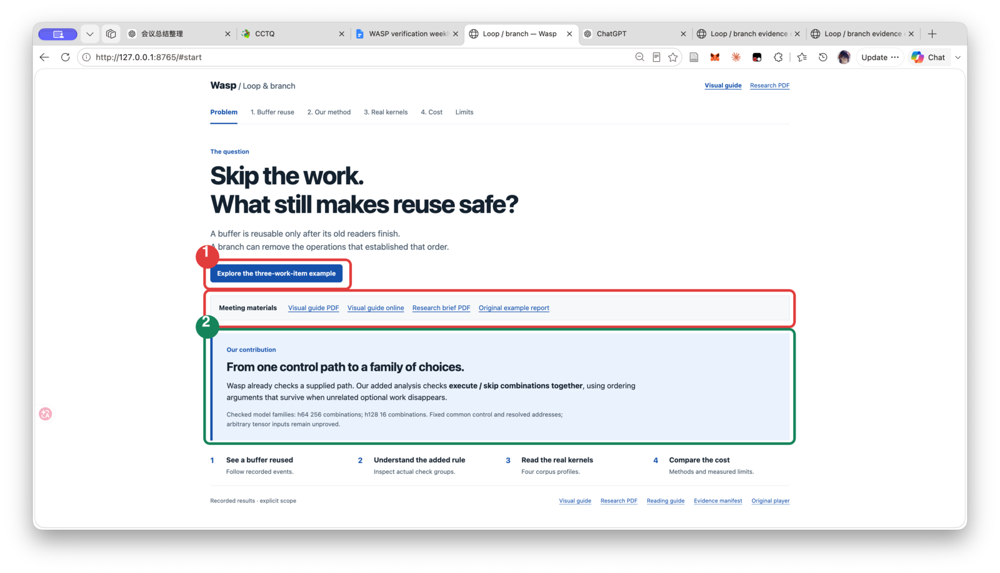
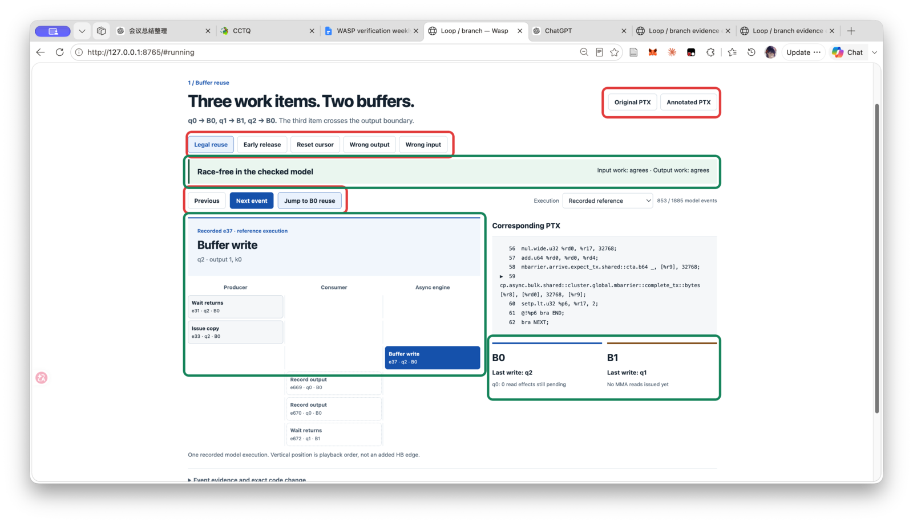
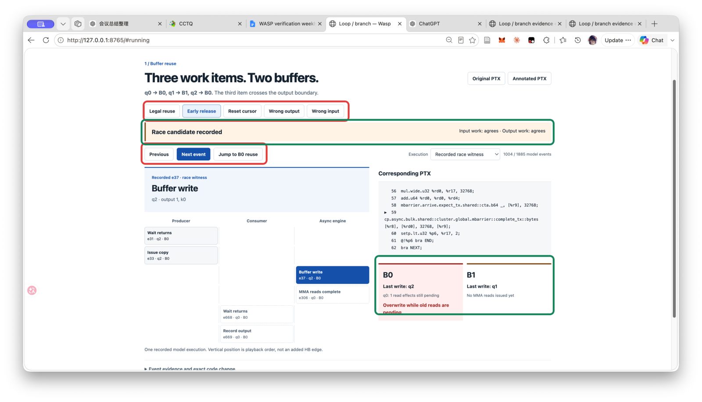
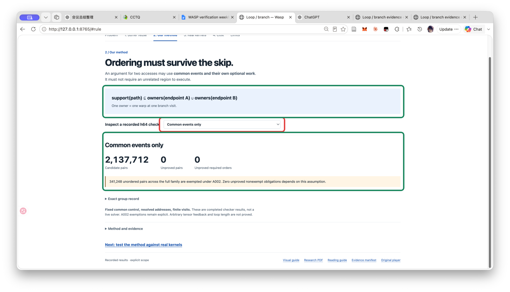
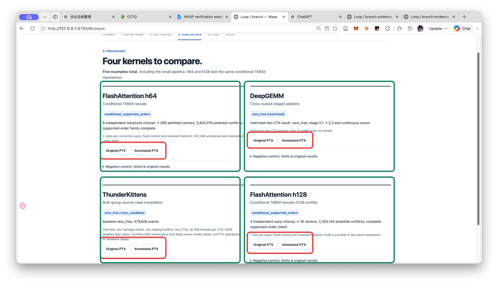
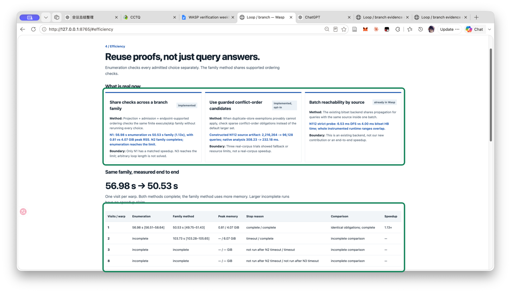
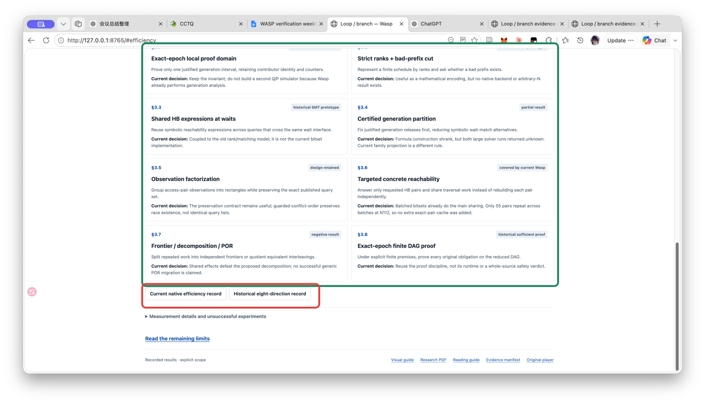
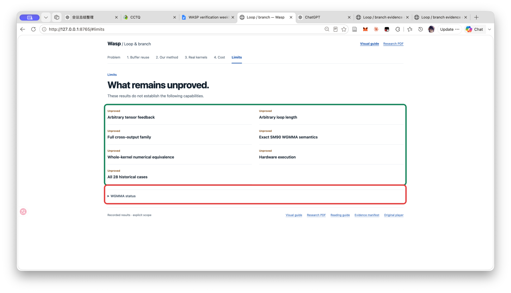

Loop / Branch 可视化操作与讲解指南
今天只讲一个问题：循环中的某一轮跳过异步工作后，原来的 buffer reuse 顺序还成立吗？
红框：要点击的控件绿框：要读取的结论或状态

起始页
- 红框 1：进入三 work-item 的最小例子。
- 红框 2：打开指南、研究简报和原始报告。
- 绿框：先读贡献边界。Wasp 已能检查一个给定路径；这里新增的是对一组 execute/skip 选择共同检查。
现场直接说“我不先从算法名出发。先看一个具体问题：第三个 work item 要重新使用 B0，但某条分支可能删掉原来保证顺序的异步操作。我们要判断，哪些 ordering arguments 在这次 skip 之后仍然成立。”
1. 合法复用：先建立读者能看懂的基线

- 红框：保持 Legal reuse；点击 Next event，或直接点 Jump to B0 reuse。
- 右上红框：Original PTX 与 Annotated PTX 分开保存；打开的是完整文件，不是摘录。
- 顶部绿框：记录结果为 race-free，输入和输出 work correspondence 都一致。
- 左侧绿框：三条泳道只表示记录执行的播放顺序，不额外创造 HB edge。
- 右下绿框：q2 写回 B0 时，q0 的 pending read effects 为 0，因此这次 reuse 有完成依据。
现场直接说“q0 用 B0，q1 用 B1，跨 output 的 q2 再用 B0。关键不是 buffer 编号轮换，而是旧读者在覆盖前已经完成。”
2. 单因素反例：只把 release 提前

- 顶部红框：点击 Early release。
- 控制区红框：执行选择 Recorded race witness，再跳到 B0 reuse。
- 结果绿框：状态变成 Race candidate recorded。
- 资源绿框：q2 覆盖 B0 时，q0 仍有 1 个 read effect pending；页面直接显示 Overwrite while old reads are pending。
这不是 mock 动画。事件顺序和 witness 取自保存的 verifier 产物；没有记录 trace 的 corpus 案例不会被伪装成可播放动画。
现场直接说“这里不改 work mapping，不改 buffer，只提前 release。旧读取还没完成就覆盖 B0，于是合法例子的唯一关键条件被击穿。”
3. 我们的方法：ordering 必须能承受 skip

- 上方绿框：一条 ordering path 只能依赖共同事件，以及这一对 endpoint 自己拥有的 optional work。
- 红框：下拉框选择一个真实 h64 check group。可以从 common events 切换到具体 warp/visit owner。
- 下方绿框：读取 candidate pairs、unproved pairs、unproved required orders，以及 A002 exemption 数量。
解释：如果证明必须依赖第三个无关 optional region 执行，那么那条 region 被 skip 时，证明就消失。当前规则只覆盖 fixed common control、resolved addresses 和 finite visits。
不要说：proved 不等于数值等价；unproved 不等于 kernel bug；A002 exemption 是显式假设，不是被藏掉的成功。
现场直接说“我们的核心不是再枚举一个路径，而是找出对 execute/skip 家族都成立的 ordering support。无关 optional work 不能成为必要前提。”
4. 五个例子：一个讲透，四个用于对照

- 四个绿框：FlashAttention h64、DeepGEMM、ThunderKittens、FlashAttention h128。加上前面的最小 pipeline，共五个例子。
- h64 与 h128 是同一种 conditional-TMEM 机制，不是两个不同贡献；区别是 visit 数与 choice family 规模。
- DeepGEMM 展示跨 output 的连续 pipeline state；ThunderKittens 展示 source-read completion 先于 reuse。
- 按钮红框：每张卡都能打开原始 PTX 与逐段英文注释版。
- 展开 Negative control, limits & original results 才读取负控制、输入和 receipt；没有 trace 的卡片只给证据，不播放虚假时间线。
现场直接说“第一个例子解释机制；这四张卡说明同一问题落在真实 kernel 的不同位置。它们共享 completion、matching、reuse 这条主线，但不假装共享一份完整语义。”
5. 效率：先说当前真实成立的三件事

- 上方绿框：三种当前方法分别是 branch-family proof sharing、guarded conflict-order candidates、batch reachability by source。
- 第一种是本阶段直接实现：N1 从 56.98 s 到 50.53 s，为 1.13×，但 peak RSS 从 0.81 GiB 增至 4.07 GiB。
- 第二种在构造的 N112 上将 query 从 2,216,264 降至 96,128，native analysis 从 308.23 ms 到 232.18 ms；尚无真实 corpus speedup。
- 第三种是 Wasp 已有 bitset backend：严格 probe 为 6.53 ms DFS 对 4.00 ms bitset；全程时间区间重叠，不能宣称 end-to-end speedup。
- 下方绿框：只在双方都完整完成时显示 speedup。N2 只有 family 完成；N3 触限。
现场直接说“效率不是独立的技巧清单。这里比较的是同一组义务：枚举每个选择，还是共享对整个 family 都成立的证明。当前只有 N1 可以报告完整 speedup。”
6. 八条历史效率方向：保留结论，不包装成八个成功优化

- 绿框：八张卡逐条写明 idea、历史状态和当前决定。
- 可继续使用的思想：exact-epoch proof domain、observation factorization、targeted reachability、finite DAG proof discipline。
- 没有进入当前实现的方向：old rank/SMT、shared HB expressions、generation partition。
- 明确的负结果：frontier/decomposition/POR 因共享 effects 不能形成通用分解。
- 红框：打开当前 Wasp efficiency record 或完整历史记录，核对推导和实验。
现场直接说“这些方法没有丢。我们把它们按证据重新分类：哪些已被 Wasp 覆盖，哪些只保留设计原则，哪些实验失败。这样不会把历史探索误报成当前贡献。”
7. 主动收口：明确什么还没有证明

- 绿框：逐项读限制。当前不覆盖 arbitrary tensor feedback、arbitrary loop length、full cross-output family、whole-kernel numerical equivalence、hardware execution 和全部 28 个历史案例。
- 红框：展开 WGMMA status。当前 corpus 没有现成
wgmma.PTX，frontend 也不建模它；tcgen05 或 bulk-group 结果不能冒充 WGMMA migration。
现场直接说“这是有限控制家族上的同步与资源复用分析，不是任意循环定理，也不是 Volta 式整 kernel 数值等价检查。限制直接列在主路径末尾。”
五分钟顺序
- 30 秒：起始页提出 skip 后 reuse 是否仍安全。
- 90 秒：合法 B0 reuse 与 early-release 单因素反例。
- 60 秒：owner-supported ordering rule。
- 60 秒：四个真实 kernel 卡片。
- 45 秒：三项当前效率与 N1 完整对比。
- 15 秒：限制页收口。
8. 现场材料清单
按下面顺序打开即可；主站保持英文，中文仅在本指南中出现。
- 最小例子原始 PTX
- 最小例子注释 PTX
- h64 family receipt
- h128 family receipt
- 四个 corpus evidence
- 效率数据
- 当前效率研究记录
- 历史八方向记录
- 站点构建 receipt
最终一句话“Wasp 已能检查给定控制路径；我们的增量是在明确前提下，把一次 execute/skip 路径检查提升为有限 choice family 的共同检查，并只复用那些在相关 optional work 消失后仍然成立的 ordering arguments。”